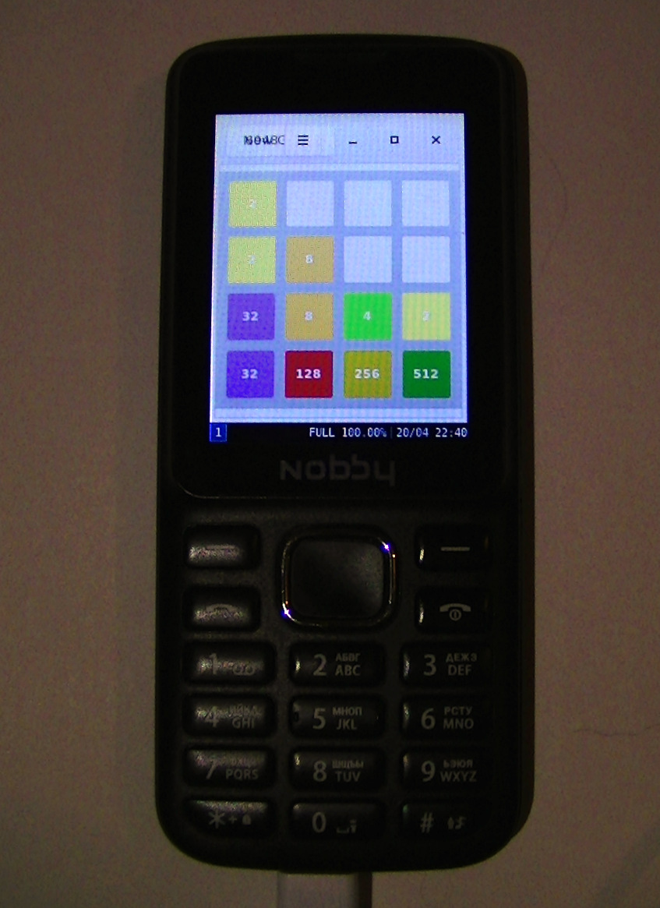

Nobby 230 (nobby-230)
Jump to navigation
Jump to search
|
 Nobby 230 | |
| Manufacturer | Nobby |
|---|---|
| Name | 230 |
| Codename | nobby-230 |
| Released | 2019 |
| Category | testing |
| Original software | Mocor 5 OS (based on Android 4.4.2) |
| postmarketOS kernel | 3.10.17 |
| Hardware | |
| Chipset | Spreadtrum SC7715GA |
| CPU | 1x 1.0 GHz Cortex-A7 |
| GPU | Mali-400 MP1 |
| Display | 240x320 |
| Storage | 512 MB |
| Memory | 256 MB |
| Architecture | armv7 |
| Unixbench Whet/Dhry score | 183.5 |
{kind=link}
| USB Networking |
Works
|
|---|---|
| Flashing |
Partial
|
| Touchscreen |
Unavailable
|
| Display |
Works
|
| WiFi | |
| FDE | |
| Mainline | |
| Battery |
Works
|
| 3D Acceleration | |
| Audio |
Works
|
| Bluetooth | |
| Camera | |
| GPS | |
| Mobile data | |
| SMS | |
| Calls | |
| USB OTG |
Unavailable
|
| NFC | |
| Accelerometer |
Unavailable
|
|---|---|
| Magnetometer | |
| Ambient Light | |
| Proximity | |
| Hall Effect | |
| Ir TX | |
|---|---|
| TrustZone | |
Contributors
- HenriDellal
- bnister
Maintainer(s)
Users owning this device
How to enter flash mode
Hold Accept and Power buttons to enter fastboot.
Issues
- It's not possible to control screen brightness/disable screen;
- The keyboard backlight brightness is very low.
Installation
Install pmOS on microSD with
pmbootstrap install --sdcard /dev/mmcblkX
where /dev/mmcblkX is path to card that can be found with lsblk.
Insert card in device, enter fastboot as written above and run
pmbootstrap flasher flash_kernel
fastboot rebootfastboot boot doesn't work as intended.
Kernels
This section may be interesting for those who want to port postmarketOS on SP7715GA device. I've tried some downstream kernels and there are my findings:
- bigzz/sc7715-kernel: boots, but doesn't support SDCardFS.
- BLU kernel: being used for this device as the best suiting kernel.
- Blade AF3 kernel: has building issues with autotst driver.
Other information
MTD
dev: size erasesize name mtd0: 00040000 00040000 "spl" mtd1: 000c0000 00040000 "2ndbl" mtd2: 00080000 00040000 "kpanic" mtd3: 1fe80000 00040000 "ubipac"
UBIFS
241, 0 ubi0 241, 16 ubi0_boot 241, 18 ubi0_cache 241, 15 ubi0_fbootlogo 241, 14 ubi0_logo 241, 20 ubi0_misc 241, 2 ubi0_miscdata 241, 1 ubi0_prodnv 241, 19 ubi0_recovery 241, 17 ubi0_system 241, 21 ubi0_userdata 241, 5 ubi0_wcnfixnv1 241, 6 ubi0_wcnfixnv2 241, 13 ubi0_wcnmodem 241, 9 ubi0_wcnruntimenv1 241, 10 ubi0_wcnruntimenv2 241, 12 ubi0_wdsp 241, 3 ubi0_wfixnv1 241, 4 ubi0_wfixnv2 241, 11 ubi0_wmodem 241, 7 ubi0_wruntimenv1 241, 8 ubi0_wruntimenv2 10, 40 ubi_ctrl